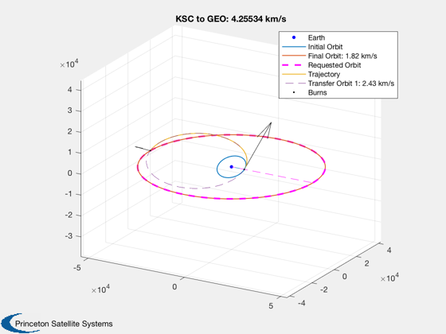
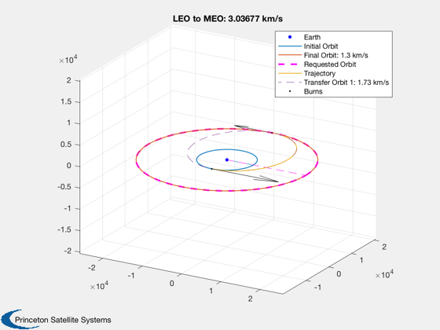
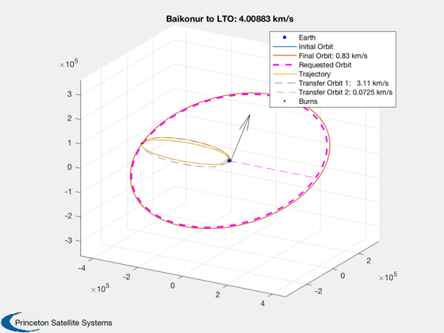
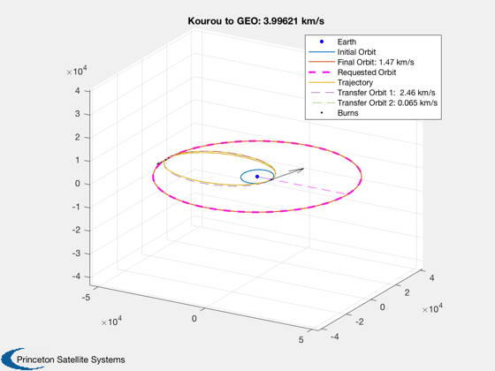
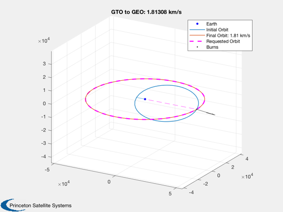
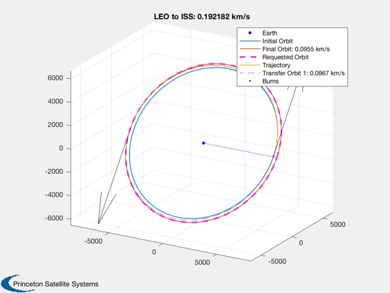
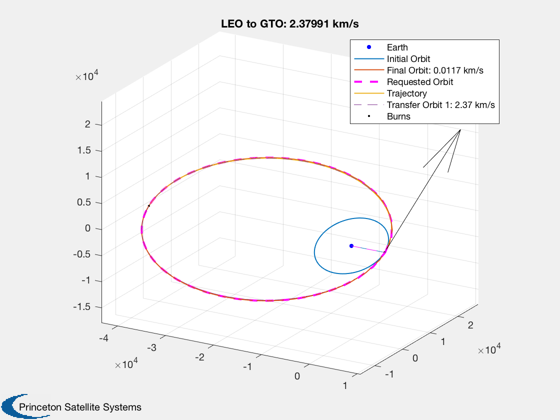
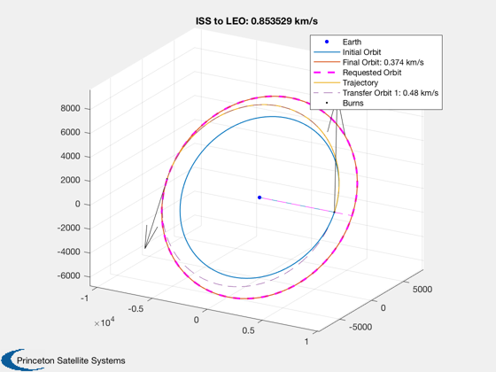

Solve for optimal burns for all the examples in OrbitTransferExamples
Each of several transfers is computed.
See also: OrbitTransferExamples, OptimizeElementsImpulsiveSearch
%-------------------------------------------------------------------------- % Copyright (c) 2018 Princeton Satellite Systems, Inc. % All rights reserved. %-------------------------------------------------------------------------- % Since 2018.1 %-------------------------------------------------------------------------- demos = ListCases( 'OrbitTransferExamples' ); for demoIndex = 1:length(demos) demoString = demos{demoIndex}; disp(demoString); tic [elInitial,elFinal,mask] = OrbitTransferExamples( demoString ); burns0 = [1 pi/2 pi/2 0;1 -pi/2 pi/2 0]; [burns1,~,opt] = OptimizeElementsImpulsiveSearch(elInitial,elFinal,burns0); dvTotal = SumBurnsDV(burns1,1); PlotImpulsiveTrajectory(elInitial,burns1,elFinal); title(sprintf('%s: %g km/s',demoString,dvTotal)); fprintf(' Delta SMA: %g km, delta inc: %g degrees\n',elFinal(1)-elInitial(1),... abs(elFinal(2)-elInitial(2))*180/pi); fprintf(' This demo required %.3g km/s of delta-V. \n',dvTotal) disp([elFinal;opt.elOut]) toc end %--------------------------------------
OrbitTransferExamples has the following cases:
=========================================================
'KSC to GEO'
'LEO to MEO'
'Baikonur to LTO'
'Kourou to GEO'
'GTO to GEO'
'LEO to ISS'
'LEO to GTO'
'ISS to LEO'
=========================================================
KSC to GEO
Delta SMA: 35480 km, delta inc: 28.6 degrees
This demo required 4.26 km/s of delta-V.
1.0e+04 *
Columns 1 through 3
4.216400000000000 0 0
4.214567622158870 0.000000055167975 0.000141124138300
Columns 4 through 6
0 0 0
0.000565198884756 0.000000008057096 0.000236084711279
Elapsed time is 1.071857 seconds.
LEO to MEO
Delta SMA: 13316 km, delta inc: 0 degrees
This demo required 3.04 km/s of delta-V.
1.0e+04 *
Columns 1 through 3
2.000000000000000 0 0
1.999576029287695 0 0
Columns 4 through 6
0 0 0
0.000204795711559 0.000000033208903 -0.000047487594306
Elapsed time is 0.426588 seconds.
Baikonur to LTO
Delta SMA: 378316 km, delta inc: 22.6 degrees
This demo required 4.01 km/s of delta-V.
1.0e+05 *
Columns 1 through 3
3.850000000000000 0.000004084070450 0
3.927941629943899 0.000004075773526 0.000062825453217
Columns 4 through 6
0 0 0
0.000034171428238 0.000000083242342 -0.000002726014043
Elapsed time is 1.137935 seconds.
Kourou to GEO
Delta SMA: 35480 km, delta inc: 5.2 degrees
This demo required 4 km/s of delta-V.
1.0e+04 *
Columns 1 through 3
4.216400000000000 0 0
4.216129910113652 0.000000003764636 0.000470146982517
Columns 4 through 6
0 0 0
0.000299371566120 0.000000002958940 0.000170453815000
Elapsed time is 1.142738 seconds.
GTO to GEO
Delta SMA: 17582 km, delta inc: 28.6 degrees
This demo required 1.81 km/s of delta-V.
1.0e+04 *
Columns 1 through 3
4.216402968000000 0 0
4.216401779941755 0.000000001629526 0.000156243301869
Columns 4 through 6
0 0 0
0.000311375367205 0.000000000775278 0.000160695323444
Elapsed time is 0.368200 seconds.
LEO to ISS
Delta SMA: 330 km, delta inc: 0 degrees
This demo required 0.192 km/s of delta-V.
1.0e+03 *
Columns 1 through 3
6.814000000000000 0.000900589894029 0
6.813987019138636 0.000900590176231 0
Columns 4 through 6
0 0 0
0.001582116883594 0.000000071015196 0.001570432814117
Elapsed time is 0.560192 seconds.
LEO to GTO
Delta SMA: 17698 km, delta inc: 0 degrees
This demo required 2.38 km/s of delta-V.
1.0e+04 *
Columns 1 through 3
2.458200000000000 0.000049916416607 0
2.458199411741583 0.000049916416607 0
Columns 4 through 6
0 0.000071524000000 0
0.000000020149834 0.000071523993711 -0.000314156518942
Elapsed time is 0.548407 seconds.
ISS to LEO
Delta SMA: 1600 km, delta inc: 2 degrees
This demo required 0.854 km/s of delta-V.
1.0e+03 *
Columns 1 through 3
8.384000000000000 0.000935496479069 0
8.383845089688567 0.000935496538439 0.000000016662124
Columns 4 through 6
0 0 0
0.001676152819481 0.000000076908360 0.001465570977951
Elapsed time is 0.728818 seconds.
       